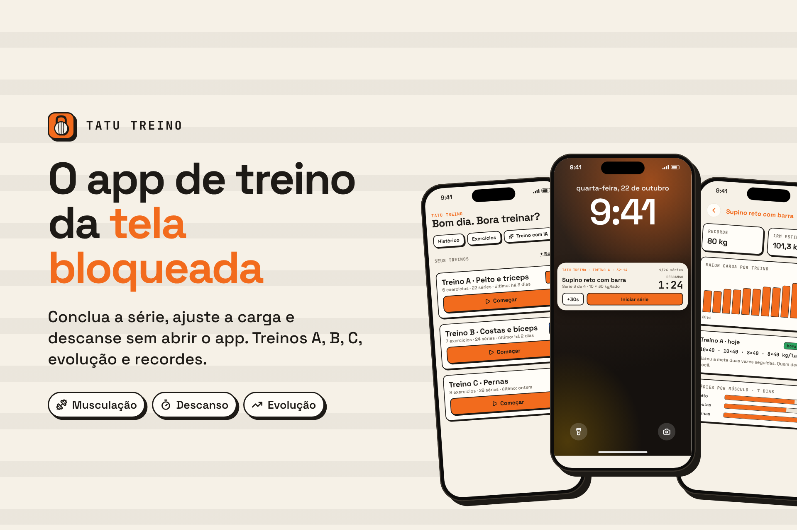

Seu treino na tela bloqueada.
Conclua a série, ajuste repetições e peso e descanse direto da tela bloqueada, como uma música tocando. Nada de se perder no feed no meio do treino.
Tela bloqueadaConcluir série, +1/−1, peso e descanso sem abrir o app.
Descanso que avisaContagem regressiva, +30s, alarme que vibra forte e modo automático.
Treinos do seu jeitoA, B, C com pirâmide, peso por lado, placas, unilateral e alternado.
Treino com IACopie o prompt, peça para a sua IA e cole a resposta. Pronto.
Foto do treinoEstatísticas por cima da foto, prontas para os stories.
EvoluçãoHistórico, recordes, 1RM estimado e quando subir a carga.

Sem conta e sem cadastro: seus treinos ficam salvos no seu celular.